- bg1
- bg2
- bg3
독도는 우리땅
DOKDO,
BEAUTIFUL
ISLAND OF KOREA
구성
독도는 화산활동에 의해 생성된 섬으로 2개의 큰 섬(동도, 서도)과 89개의 부속도서로 구성되어 있으며, 총면적은 187,554㎡이다. 동도는 유인등대 등 대부분의 시설들이 위치하고 있는 섬으로 높이는 98.6m, 둘레는 2.8㎞, 면적은 73,297㎡이다. 서도는 높이 168.5m, 둘레 2.6㎞, 면적 88,740㎡이며 전체적으로 험준한 원추형의 발달상태를 이루고 있으며, 심한 사면경사를 이루고 있다. 기타 부속도서들의 총면적은 25,517㎡이며, 동도와 서도 사이의 해협은 폭 151m, 길이는 약 330m, 수심은 10m 미만이다.
위치
(우)40240, 경상북도 울릉군 울릉읍 독도리 1~96번지 (분번포함 101필지)
독도 인구현황
독도의 주민은 고 최종덕씨가 1965년 3월에 최초로 거주했으며, 현재는 김성도·김신열 부부가 주민등록상 거주민으로 거주하고 있다. 이들을 포함하여 2019년 12월 기준으로 14명(14세대)이 등록되어 있다. 독도에 근무하는 인원은 독도경비대원 약 40명, 포항지방해양항만청 소속의 독도 등대관리원 3명, 울릉군청 소속의 독도관리사무소 직원 2명이 있다.
독도의 진실
-
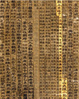
- 1454
- line
-
세종실록지리지
우산과 무릉두 섬이 현의 정동쪽 바다 가운데 있다.
두 섬은 서로 멀리 떨어져 있지 않아, 날씨가 맑으면 바라볼 수 있다.
신라 때에 우산국 또는 울릉도라 하였다.
-
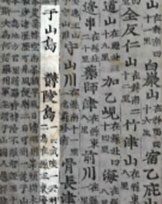
- 1531
- line
-
신증동국여지승람
우산도·울릉도
무릉(武陵)이라고도 하고, 우릉(羽陵)이라고도 한다.
두 섬이 현(縣)의 정동쪽 바다 가운데 있다.
-
- 1770
- line
-
동국문헌비고
우산도·울릉도 ... 두 섬으로 하나가 바로 우산이다.
여지지에 이르기를, 울릉과우산은 모두 우산국의 땅인데,
우산은 일본이 말하는 송도(松島)라고 하였다
-
- 1808
- line
-
만기요람
울릉도가 울진 정동쪽 바다 가운데 있다...
여지지에 이르기를, 울릉과 우산은 모두 우산국의 땅인데,
우산은 일본이 말하는 송도(松島)라고 하였다.
-
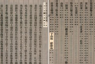
- 1908
- line
-
증보문헌비고
우산도·울릉도 ...
두 섬으로 하나가 바로 우산이다.
속(續 : 새로 추가한 내용) 지금은 울도군이 되었다.
영상으로 보는 독도
동북아역사재단 독도체험관 미취학 아동(유치원, 어린이집 등) 및 초등학교 저학년 온라인 교육동영상 '독도보물찾기'
-
< 봄 - 서도 정상에서 바라본 동도 >
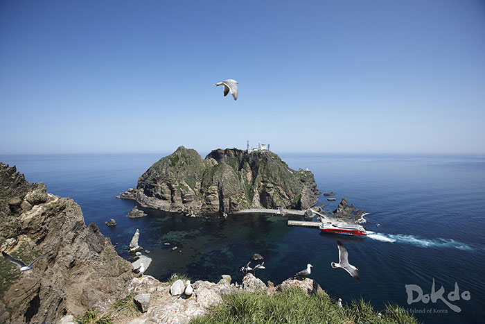
-
< 여름 - 서도 왕호장근 군락지, 탕건봉 >
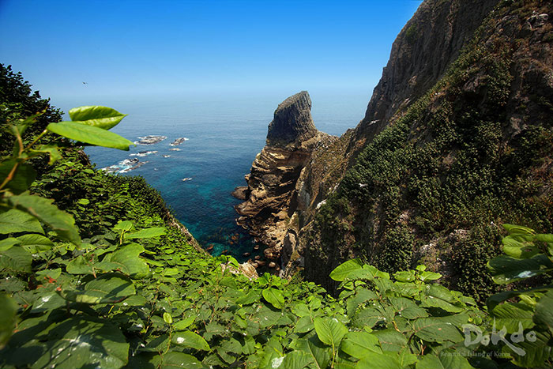
-
< 가을 - 동도에서 바라본 탕건봉, 삼형제굴바위 >
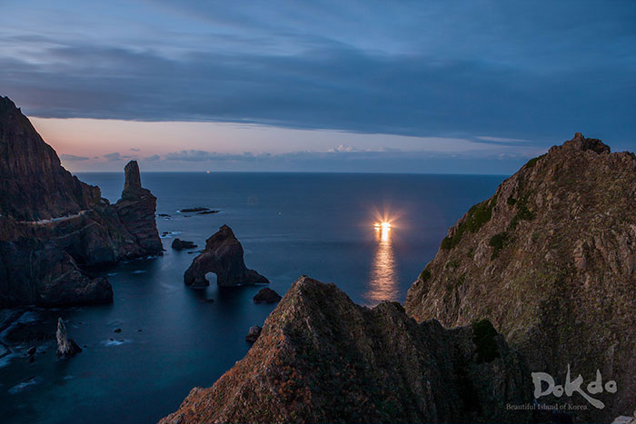
-
< 겨울 - 동도 정상에서 바라본 서도의 설경 >
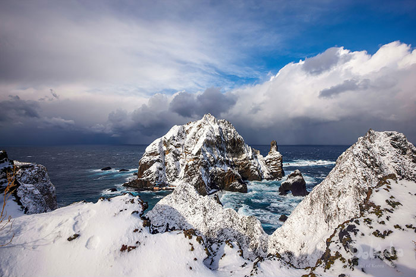
-
< 갯괴불주머니 >
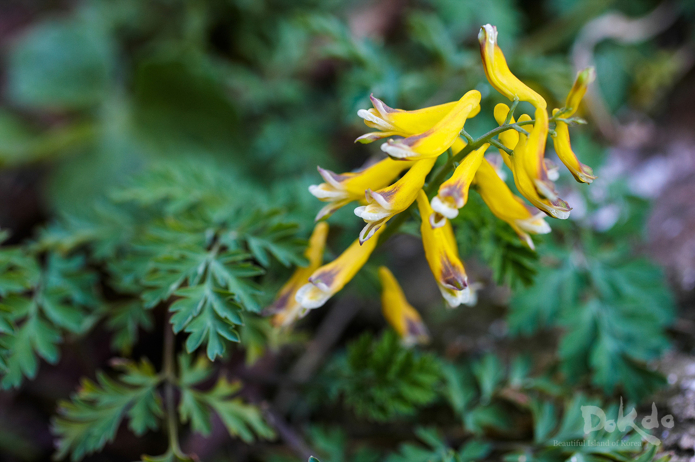
-
< 왕호장근 >
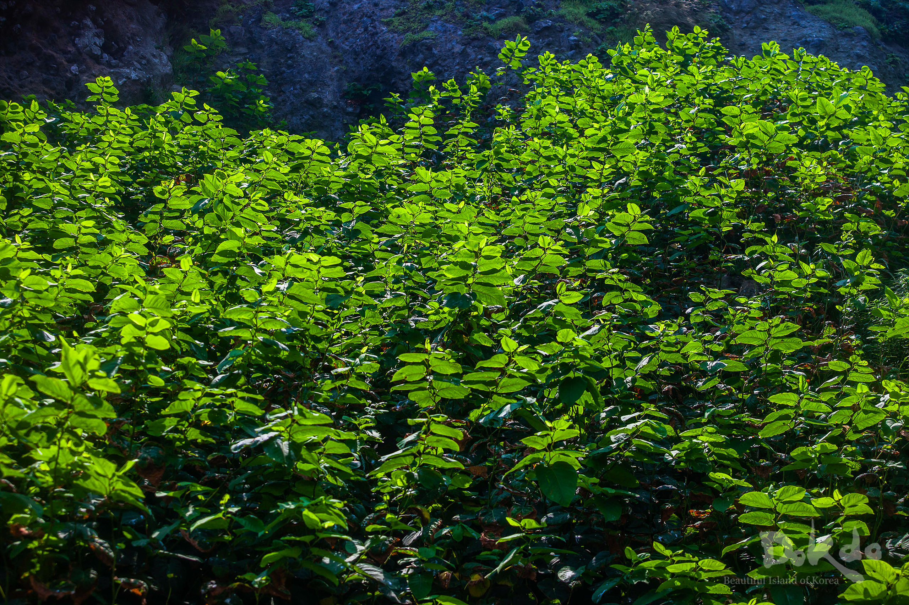
-
< 풍란 >
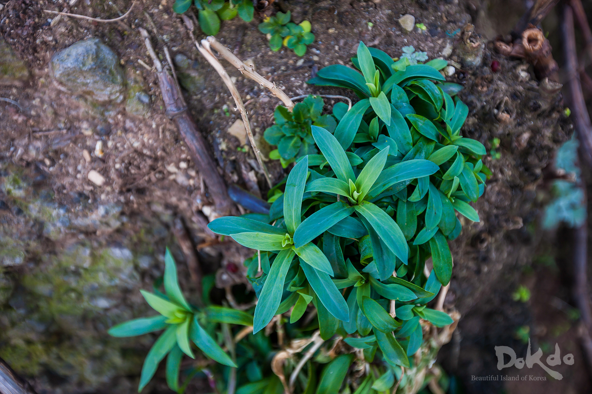
-
< 땅채송화 >
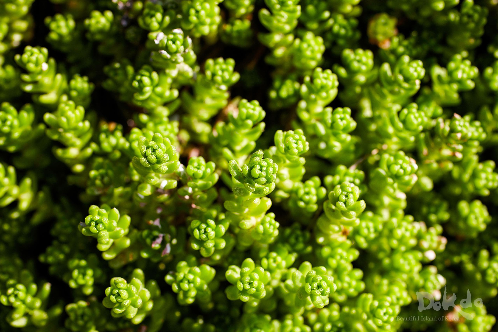
-
< 포란 중인 괭이갈매기 >
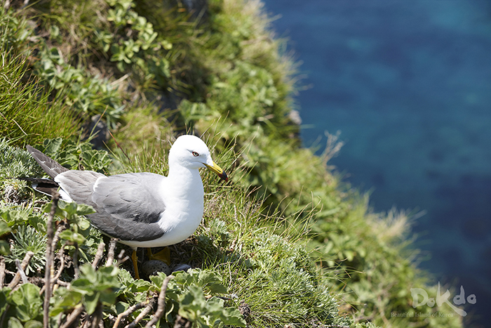
-
< 독도에 돌아온 괭이갈매기 >
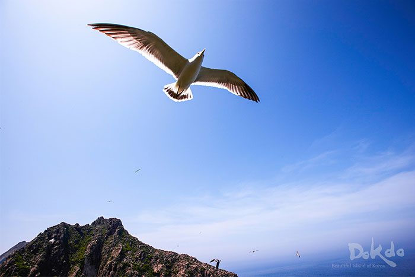
-
< 3마리의 강치 >
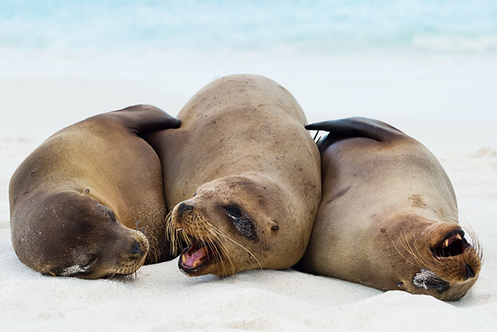
-
< 독도강치동상 >
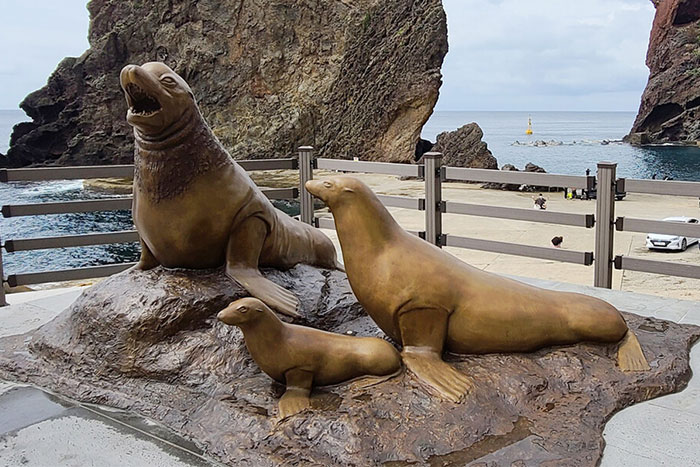
-
< 이종상 화백 - 독도의 기II >
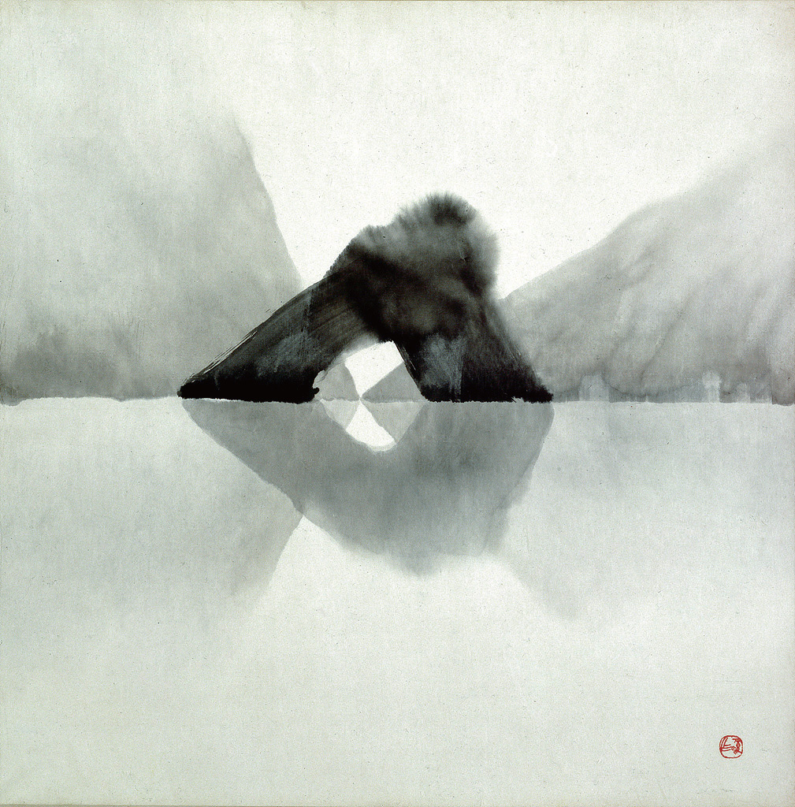
-
< 정의부 작가 - 독도의 아침과 철새들 >
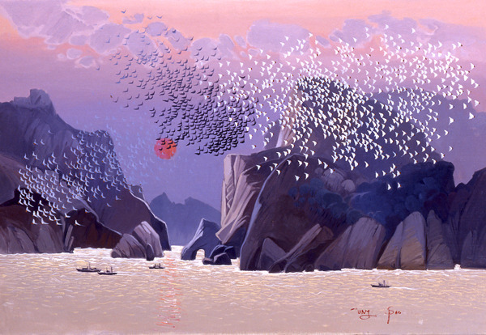
-
< 류인선 작가 - 독도-동도에서 서도를 바라보다 >
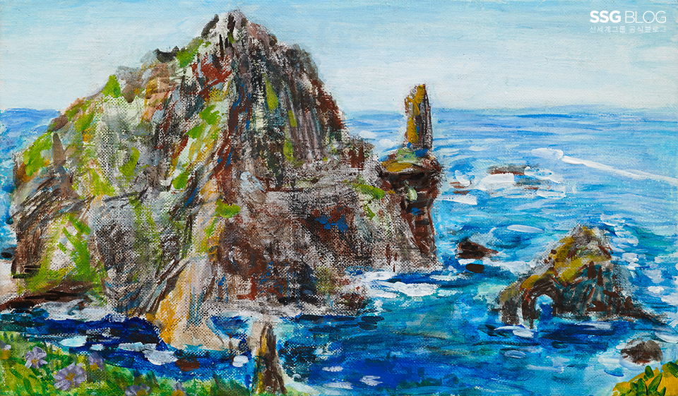
-
< 전종철 작가 - 독도의 빛 >
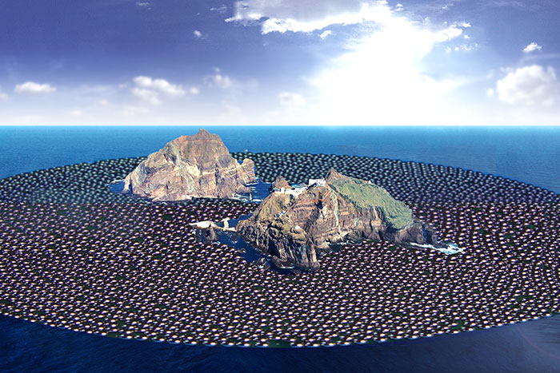
궁금한 독도 소식
전체게시물 10 건
| 번호 | 제목 | 작성자 | 작성일 | 조회 |
|---|---|---|---|---|
| 10 | 공동기획전 울릉도·독도 동해를 품다 개최 | 관리자 | 21.10.21 | 219 |
| 9 | 독도박물관 제3전시실 개편 | 관리자 | 21.10.21 | 219 |
| 8 | 울릉도 독도 특산식물 사진전 | 관리자 | 21.10.21 | 219 |
| 7 | 2021년 독도박물관-부산해양자연사박물관 공동기획전 "독도가 살아있다" 개최 | 관리자 | 21.10.21 | 219 |
| 6 | "독도, 이야기를 품다" 전시개최 안내 | 관리자 | 21.10.21 | 219 |
| 5 | 독도박물관 본관 임시휴관 안내 | 관리자 | 21.10.21 | 219 |
| 4 | 추석 연휴 독도박물관 운영시설 휴관 안내 | 관리자 | 21.10.21 | 219 |
| 3 | 2020년 독도박물관-천안흥타령관 공동기획전 개최 안내 | 관리자 | 21.10.21 | 219 |
| 2 | 2020년 독도박물관 특별전시회 독도의 과학 전시 개최 안내 | 관리자 | 21.10.21 | 219 |
| 1 | 안용복기념관 노후 시설 보강 공사로 인한 휴관 안내 | 관리자 | 21.10.21 | 219 |